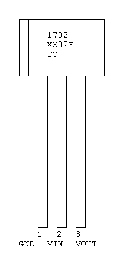
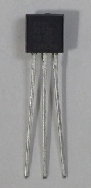

The MCP1702 is a series of low dropout (LDO) voltage regulators. It has a maximum output current of 250 mA and a quiescent current of 2 μA.
The MCP1702-3302E/TO is a TO-92 3.3 V voltage regulator.
